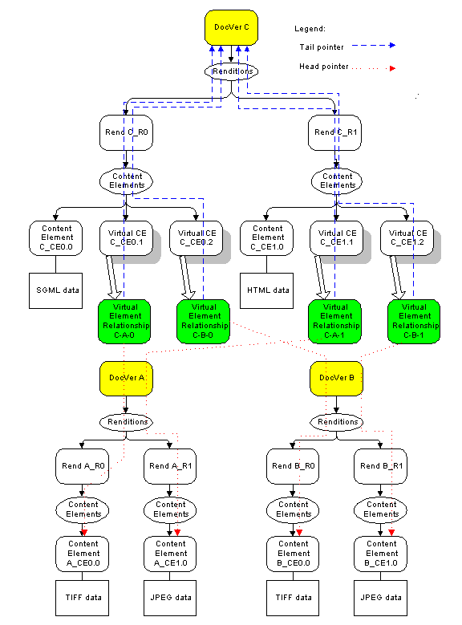

Authors: DMA TC Compound/Structured Document Subcommittee
Richard Sauvain (Xerox Corporation, Chair), Mitsuru Akizawa (Hitachi, Ltd.), Alan Babich (FileNET), Chuck Fay (FileNET), Jim Green (FileNET), Dennis Hamilton (InfoNuovo), Katsumi Kanasaki (Ricoh, Ltd.), Yoshifumi Sato (Hitachi, Ltd.)
Revision 0.6, 1999 November 15
Revision 0.1, 1999 August 20, Richard Sauvain
·
Initial Virtual Elements draft, incorporating
material from the current CSDocs sketch, a proposal (CDCousins03.doc) by Steve Cousins,
and recent discussions between Richard Sauvain and Dennis Hamilton.
Revision 0.2, 1999
September 2, Richard Sauvain
·
Incorporate comments from CSDocs phone
conference of 31 August 99:
§
Move dmaProp_VirtualElementSource to
dmaClass_ContentElement and make it optionally support IdmaVirtualElement, thus avoiding
having to add three new classes (Virtual Content Element, Virtual Content Transfer, and
Virtual Content Reference)
§
Drop the idea of a new relationship class
(dmaClass_ContentRelationship) in between dmaClass_relationship and
dmaClass_CSRelationship. Instead, make
dmaClass_VERelationship a sibling of the foundation proposal's dmaClass_CSRelationship. This gets rid of one more class, at the expense of
defining the rendition and content head and tail IDs twice.
Revision 0.3, 1999
October 6, Richard Sauvain
·
Incorporate comments from CSDocs phone
conference of 21Sep 99 and related e-mail:
§
Revise section 7 to include capability DMAC_CONTENT_VCE_TO_VCE, so that the notions of
VCE support and VCEs pointing to other VCEs are independent.
§
Describe reflective properties of head and
tail of a VERelationship as “unspecified”, to allow the possibility of
additional properties being added to doc ver classes.
§
Introduce IdmaVirtualElement at
dmaClass_ContentElement instead of dmaClass_DMA
§
Augment the description of content element
changes in section 5 with a discussion of locking, a statement about precedence of content
element properties in a VCE situation, a clarification that instanceID does not change
when a real content element is changed into a virtual one, and some deletion rules.
§
Add a note about versioning.
§
Add to section 10 a second sample (for
removing a VCE from a rendition)
Revision 0.4, 1999
October 27, Richard Sauvain
·
Incorporate comments from CSDocs phone
conference of 12 Oct 99 and e-mail from Dennis Hamilton:
§
Paradigm shift from proposing VCEs with hints
about generalizing, to proposing Virtual Elements, with VCE as a specific instance. This
entailed numerous wording changes.
§
Major rewrite of section 5.1, including
deletion rules, precedence of property values, treatment of instanceId
§
Name change: dmaProp_VirtualElementSource to
dmaProp_SharedElement.
§
Add IdmaVirtualElement::RemoveDerivation to
enable changing a virtual element back into a real one. Revise wording of SetDerivation.
§
Revise capabilities so that the notions of
Virtual Element support, Virtual being sharable, and VCE support are independent.
§
Add third sample – turning a VCE into a
real one
§
Correct justification wordings in section
11.1 (alternatives considered)
§
Correction of section 16 (Failure modes)
§
Add references to the WebDAV advanced
collections spec and our requirements document.
Revision 0.5, 1999
November 15, Richard Sauvain
·
Incorporate comments from CSDocs phone
conference of 2 Nov 99:
§
Change “doc ver” to
“DocVersion” throughout
§
Change 5.1.1.5
from Deletion Rules to Deletion Policy example.
§
Add paragraph under 5.1.1.6 (Sample behavior
for virtual content elements) to explain behavior when relationship object has been
deleted or head object is not found.
§
Change reflective properties discussion in
5.1.2.3 to say there are no predefined
properties on the doc ver class that allow navigation back to the VERelationship object.
§
Remove deletion rules in 5.1.2.3 so that the
prevailing rules of the relationship model apply.
§
Revise discussion of checkout of a DocVersion
that has virtual elements. Having that
operation clone the VERelationship objects (so that all content is preserved in the new
version) is inconsistent with current versioning practice and could be damaging to
interoperable use of DMA. Instead, Dennis
will add a SetDeepCheckOut method in the foundation proposal; this method will clone any
relationship objects that have the checked out object at their tails. Section 8.6 revised
accordingly.
§ Suggest in section 17 a rewording of DMARC_BAD_REFERENCE so that
it is also usable for virtual elements
§ Add reference to Relationship Strength proposal
Revision 0.6, 1999
November 24, Richard Sauvain
·
Incorporate comments from CSDocs phone
conference of 23 Nov 99:
§
In 5.1.2.2, change ‘Class if object' for
dmaProp_SharedBy to dmaClass_Relationship (with certain restrictions) rather than
dmaClass_VERelationship. This allows the possibility of using a CSRelationship or other
relationship classes in the future if they contain properties to uniquely identify the
Head and Tail objects.
§
Revise 5.1.1.6
to describe behavior if a virtual content element is made real without the client
supplying information about a new source of content.
This is like creating a new content element without supplying a new source of
content, and normal content element behavior should occur:
DMARC_NOT_FOUND should be returned by the IdmaContentTransfer copy or get methods.
Invoked on such an object. Specify same
behavior if head of relationship is missing.
§
In 5.1.2.3, the first two bullets under
Deletion Rules did not make sense and were deleted.
§
The proposal in section 17 to generalize the
meaning of DMARC_BAD_REFERENCE to make it more suited to dangling references is withdrawn. That error code has a particular
meaning in the context of IdmaConnection::ExecuteChange, which must be preserved.
·
Add hyperlinks to References.
3 Functional Overview/Description
3.1 Rationale
3.2 Sketch of the proposal
3.3 Diagram of shared content elements
5 New/Changed Classes and Properties
5.1.1 dmaClass_ContentElement
5.1.1.1 Support for IdmaVirtualElement
5.1.1.2 Introduction of dmaProp_SharedBy
5.1.1.3 Introduction of dmaProp_SharedElement
5.1.1.4 Requirement for instanceId
5.1.1.5 Deletion policy example
5.1.1.6 Content retrieval behavior for virtual content elements
5.1.1.7 Precedence of property values
5.1.1.8 Switching from virtual to real and vice versa
5.1.1.9 Locking
5.1.2 dmaClass_VERelationship
5.1.2.1 Interfaces
5.1.2.2 Properties
5.1.2.3 Detailed Description
6.1 IdmaVirtualElement
6.2 Description
6.2.1 IdmaVirtualElement::SetDerivation
6.2.2 IdmaVirtualElement::RemoveDerivation
7 New/Changed Types, Values, and Macros
7.1 New Capabilities
8.1 Integration Model
8.2 Query
8.3 Internationalization/Localization
8.4 Content
8.5 Containment
8.6 Versioning
8.7 Security
8.8 Naming
9 Compliance & Conformance Issues
10 Sample Usage
10.1 Creation of a virtual content element
10.2 Removing a VCE from a rendition
10.3 Changing a virtual content transfer element back to a real one
11 What Requirement Does This Address?
12 Extant Systems with Similar Features and Related Experiences
16 Failure Modes/Crash Recovery
17 How Is This Incorporated into the Specification?
18 How Is This Incorporated into the Code and Library Configurations?
The ability to share components between documents is a useful feature for representing some kinds of compound and structured documents (for instance SGML documents that share an external DTD, or HTML documents that share a .GIF file).
This proposal provides that feature by giving DMA the ability to define ‘virtual’ objects that take their data from other persistent objects.
A new virtual element relationship class (dmaClass_VERelationship) is defined as a subclass of dmaClass_Relationship. VERelationships are specialized for building virtual elements, which are elements which share some aspect of another element.
Virtual content elements are defined as one specific instance of virtual elements. The content element class is given two new optional, system derived, read only properties:
§ “shared element”, a virtual element relationship object that allows navigation to the real content element, the one which is being shared.
§ “shared by”, an enumeration of virtual element relationships that allow navigation to the objects which share this element.
A content element which has the “shared element” property is termed a ‘virtual content element’ (VCE).
Finally, a new interface (IdmaVirtualElement) is defined for constructing virtual elements.
This proposal depends on the CSDocs Foundation proposal [2], in the sense of assuming that it becomes part of the DMA spec.
Here is an example, adapted from a paper by Steve Cousins [1], of using virtual content elements in a document (C) with two renditions, one SGML (C_R0) and one HTML (C_R1). The document contains two figures, each of which is treated as a sub-document (DocVers A and B). The figures each have two renditions, one TIFF (A_R0 and B_R0) and one JPEG (A_R1 and B_R1). Each figure rendition has a single content element (four altogether, labeled A_CE0.0, A_CE1.0, B_CE0.0, and B_CE1.0 in the figures). The SGML rendition of C is associated with the TIFF renditions of the figures, and the HTML rendition is associated with the JPEG renditions.

A virtual element is one that is derived from another element, the shared element. The virtual element's dependency on the shared element is explicitly reflected in a DMA relationship. The virtual element is usable as if it is an independent element, and users can usually ignore whether a virtual element is being used.
Shared Element
The element that a virtual element derives from – the place where it gets its data. In a virtual element relationship, the shared element is the head of the relationship.
§ dmaClass_VERelationship is introduced as subclass of dmaClass_Relationship.
§ dmaClass_ContentElement is given a new relationship property to identify the source of the content. If there is a value for this property, the content element becomes virtual and shares the data of another content element.
§ dmaClass_ContentElement is given a new ‘enumeration of relationships’ property to keep track of the objects that share it.
§ dmaClass_ContentElement is given a new optional interface IdmaVirtualElement which is used in order to construct a virtual content element.
The existing class dmaClass_ContentElement is augmented as follows, to allow both virtual content transfer and virtual content reference objects. Many comments in the following are expressed as principles for virtual objects in general; these principles would apply also to other classes of virtual elements defined in the future.
A new optional interface IdmaVirtualElement (defined later in this proposal) is added to dmaClass_ContentElement.
A new (optional, system generated) property is added to enable navigation to the objects which share this content element. Support for this property is required if virtual content elements are supported.
Implementation: not required
Read-only
System-derived
Value: optional
Type: object
Cardinality: Enum
Class if object: dmaClass_VERelationship
Description: this property is an enumeration of VERelationship objects whose dmaProp_Head points to this content element. If has a NULL value, the content element is not shared. The doc space is required to update this property whenever a sharing relationship is added or deleted. That is, when a VERelationship object pointing to this content element is made persistent, that relationship object must be added to the enumeration. If a VERelationship object pointing to this content element is deleted (e.g., because its parent DocVersion has been deleted), that relationship object must be removed from the enumeration.
A new relationship-valued property (dmaProp_SharedElement ) is defined to enable the concept of virtual elements, which indicate a persistent object that is the source of the data for this element. Support for this property is required if virtual elements are supported. If a value is present for this property, the element is said to be virtual. In general, this property can be supported on any class of objects whose instances can be based on other (shared) elements.
This proposal defines shared content elements by introducing dmaProp_SharedElement on dmaClass_ContentElement:
Implementation not required
Read-only
System-derived
Value-optional
Type: object
Cardinality: scalar
Class if object: dmaClass_Relationship
Description: the value of this property is set by the DMA doc space when the virtual element is made persistent. The head of the relationship is the persistent element that will be the source of the data for this virtual element. The tail of the relationship is the virtual object.
There is a constraint on the relationship object: it must be a subclass of dmaClass_Relationship that contains properties which uniquely identify the shared and sharing objects. For virtual content elements, dmaClass_VERelationship is such a subclass. It contains the properties
dmaProp_HeadRenditionId
dmaProp_TailRenditionId
dmaProp_HeadContentElementId
dmaProp_TailContentElementId
that uniquely identify a content element, given its parent DocVersion.
If the capability DMARC_VIRTUAL_ELEMENTS_SHARABLE is set, the source of a virtual element’s data may be another virtual element. This allows chains of virtual elements that eventually point to a real element. In the case of virtual content elements, the semantics of such a chain is that any virtual element in the chain will deliver the content of the real element at the end of the chain.
Note that any virtual or shared element must have a value for dmaProp_InstanceID (defined in the Foundation Proposal [2]).
Deletion of objects becomes more complex when they are virtual or shared. As mentioned section 5.1.2.3 below, DMA relationship policy as implemented by a particular doc space governs deletion of shared or sharing objects.
One reasonable example of deletion policy is the following:
§ If an object is pointed at by a VERelationship (i.e. if it has a value for dmaProp_SharedBy), requests to delete the object (or any independently persistent object of which it is a part) are failed with DMARC_OBJECT_REFERENCED. All sharing relationships must be removed before an element can be deleted.
§ Virtual elements that are not shared may be deleted as usual. The VERelationship object in dmaProp_SharedElement is deleted as a side effect.
The application of is policy to content elements would mean that
§ A shared content element cannot be deleted
§ A DocVersion or rendition containing a shared content element cannot be deleted
Note: Two objects can become “cross-linked” if each shares one of the other’s objects. In that case (under the above policy) neither can be deleted until the sharing relationship is broken (by modifying the referencing objects to remove the sharing relationships).
If a client calls IdmaContentTransfer::GetStream on a virtual content transfer element, the returned stream will contain the same data as if it had been called on the content element that is the head of the relationship object given in dmaProp_SharedElement.
If a client retrieves the value of dmaProp_ContentLocation on a virtual content reference object, it will get the same value that is in dmaProp_ContentLocation on the real element.
If chains of virtual elements are present, the chain is followed to the real element at the end of the chain.
There are two potential anomalies that can occur when retrieving content data using virtual elements:
1. A virtual content element is made real without the client supplying information about a new source of content, hence dmaProp_SharedElement has no value
2. The head object of the relationship given in dmaProp_SharedElement is missing.
In either case, this is analogous to creating a new content element without supplying a source of content, and normal content element behavior should occur: DMARC_NOT_FOUND should be returned by IdmaContentTransfer copy or get methods invoked on such an object.
Since a virtual object points to a real object, and they can both have properties, the relationship of the two sets of properties is important. The general principle is that the two sets of properties are independent. There may be exceptions when important for workable semantics.
For content elements, there are three exceptions:
1. dmaProp_ComponentType
The component type of the VCE may differ from that of the real CE, or may track it – and this tracking or lack thereof may vary from instance to instance.
2. dmaProp_ContentLocation
This property must track the dmaProp_ContentLocation of the shared element for the concept of virtual content reference objects to make any sense at all. The doc space must enforce this.
3. dmaProp_RetrievalName
The retrieval name of a virtual content transfer object may differ from that of the real CE, or may track it – and this tracking or lack thereof may vary from instance to instance.
Since virtual and real content elements are both of class dmaClass_ContentElement, it is possible to change a content element from real to virtual or vice versa by calling methods in IdmaVirtualElement and calling ExecuteChange on the parent DocVersion. The instanceID value of the content element does not change if this is done.
If a virtual element is changed to real, the client is expected to supply the information that would be present in a real element before ExecuteChange is called. For example, when a virtual content transfer element is made real, the client would first call IdmaContentTransfer::SetCaptureResource or SetCaptureStream in addition to IdmaVirtualElement::RemoveDerivation
When a doc space locks a DocVersion containing VCEs, it must also lock all the DocVersions that contain the sources of these VCEs (that is, that contain the content elements -- real or virtual -- that the VCEs point at). If it is unable to do so, it must fail the lock request.
This is a new class introduced by this proposal. It is a relationship that is specialized to identify a dependently persistent DMA object (such as a rendition or content element) as the source of a virtual element.
Class ID: dmaClass_VERelationship
Impl. Required: -
Searchable: -
Addressable: -
Parent Class: dmaClass_Relationship
Name Property: Not Assigned
(Same as for dmaClass_Relationship)
Same as for dmaClass_Relationship plus
dmaProp_HeadRenditionId
dmaProp_TailRenditionId
dmaProp_HeadContentElementId
dmaProp_TailContentElementId
as in the CSRelationship class of the Foundation proposal [2]).
The dmaClass_VERelationship class is a specialization of Relationship for enabling sharing of dependently persistent objects -- in particular, content objects or (in the future) renditions.
NOTE: while the CSDocs subcommittee sees use cases for content element to content element relationships, and for DocVersion to DocVersion relationships, the definition is sufficiently general to handle other relationships (such as DocVersion to rendition) if they should be useful.
Semantics and usage rules are as follows.
Reflective properties
VERelationships are intended to enable sharing of content elements between documents (and possibly in the future, sharing of renditions between documents). The reflective properties for the Head and Tail properties are unspecified. Relationships can point only to independently persistent objects – in this case DocVersions. There are no predefined reflective properties on the DocVersion class that allow navigation back to the VERelationship object that has the DocVersion linked as a Head or Tail property.. However, we want to allow the possibility of vendors defining such reflective properties should they find them useful.
Deletion rules
Rules of use for DMA relationships in general (see the DMA 1.0 spec and Relationship Strength proposal [6]) determine policy on the following:
§ Whether a VERelationship must be deleted when the object at is head is deleted
§ Whether a VERelationship must be deleted when the object at is tail is deleted
This is a new interface introduced by this proposal. It provides a way to create virtual elements, i.e., to establish sharing relationships, and to remove them. A simple kind of virtual derivation is when the derivation provides the head object as the literal implementation of the virtual element with at-most trivial embellishments.
This interface provides a way to create virtual elements, such as virtual content elements, and to remove them.
Syntax
DmaRC IdmaVirtualElement::SetDerivation (
Dmapv pIRelationship)
Parameters
Name |
Mode |
Description |
pIRelationship |
Input |
An interface pointer to a subclass of dmaClass_Relationship that has properties appropriate for identifying the source of the virtual element. dmaClass_VERelationship is an appropriate subclass for virtual content elements. |
Description
Records the intention to make the persistent object that is the head of the relationship act as the source for the virtually-derived element. When the virtual element is made persistent (with ExecuteChange on the related independently persistent object), this intention will be effected. The relationship object supplied as argument will be made persistent and its tail properties filled in.
If the object is already virtual, the relationship that was already there will be deleted and replaced by the one given as an argument.
The ability for a virtual element to point to another virtual element raises the issue of cycles. Cycles in chains of virtual element references are undesirable because the semantics of virtual elements imply the ability to reach a real element, and this does not happen with a virtual element cycle.
To prevent cycles, the doc space is required to fail (with the error code DMARC_CONSTRAINT_VIOLATED) creation of any virtual element that would result in a cycle.
Return Values
Name |
Description |
DMARC_BAD_PARAMETER |
Invalid input parameter. |
DMARC_BAD_OBJECT |
Inappropriate object passed as parameter to this function |
DMARC_OK |
Success. |
Deferred Return Values
Name |
Description |
DMARC_ACCESS_DENIED |
The requester has insufficient access rights to perform the requested operation. |
DMARC_CONSTRAINT_VIOLATED |
The operation violates a constraint of the operation. |
DMARC_OBJECT_LOCKED |
The lock(s) on the persistent object prohibit the attempted operation. |
Syntax
DmaRC IdmaVirtualElement:: RemoveDerivation ()
Description
Records the intention to change the object from virtual to real. When ExecuteChange is called on the related independently persistent object, this intention will be effected (by removing this object from the dmaProp_SharedBy property of head object of the relationship object that is the value of dmaProp_SharedElement, deleting that relationship, and setting the value of dmaProp_SharedElement to NULL).
Return Values
Name |
Description |
DMARC_NOT_FOUND |
Requested item not found. (there is no derivation to remove) |
DMARC_OK |
Success. |
Deferred Return Values
Name |
Description |
DMARC_ACCESS_DENIED |
The requester has insufficient access rights to perform the requested operation. |
DMARC_OBJECT_LOCKED |
The lock(s) on the persistent object prohibit the attempted operation. |
New values for dmaProp_Capabilities on dmaClass_DocSpace are proposed:
If set, then the doc space supports the basic virtual elements features
§ A subclass (such as dmaClass_VERelationship) of dmaClass_Relationship that has the appropriate properties for identifying shared objects
§ dmaProp_InstanceID on virtual and shared objects
If reset, none of the above are supported.
DMAC_VIRTUAL_CONTENT_ELEMENTS
If set, then the doc space
supports virtual content elements (i.e., content elements can be shared).
dmaClass_VERelationship is supported and dmaClass_ContentElement supports the properties
dmaProp_SharedElement and dmaProp_SharedBy. DmaClass_ContentElement and dmaClass_Rendition
both support dmaProp_InstanceID
DMAC_VIRTUAL_ELEMENTS_SHAREABLE
If set, then virtual elements can be shared (that is the source of a virtual element can be another virtual element).
If reset, virtual elements are not sharable and the source of a virtual element must be a real element. That is, the value of dmaProp_SharedElement must be a relationship object whose head is an element that has no value for dmaProp_SharedElement.
The DMA query model is not changed by this proposal.
It should be noted that the ability to share content elements may engender the need for queries that answer questions of the form “what documents is this piece of content used in”.
Client code for content retrieval through a virtual content transfer element is exactly the same as for ordinary content transfer elements.
None. This proposal does not change the containment model.
1. Using IdmaVersionSeries::SetCheckOutNext and ExecuteChange on a DocVersion that contains VCEs does NOT clone the entire document. To quote from the spec:
“When the versionable object is "cloned", the versionable object and all dependent persistable subordinate objects are copied recursively. Cloning sets the navigation properties to null but preserves other properties with the exception of the OIID which is given a new value.”
dmaProp_SharedElement is a navigation property, so the VERelationships are not cloned, hence content that is virtual is lost.
There are two workarounds for this. Either the client must ‘manually’ rebuild the lost VERelationship objects, or the new “deep” checkout method (tentatively named SetExtendedCheckoutNext) proposed in the Foundation proposal must be used.
Note that when a new version of a document that contains VCEs is checked in, the doc space must update the dmaProp_SharedBy property values on the shared content elements.
2. When versioning a DocVersion whose content elements are referenced by VCEs, no changes are made in the referring DocVersions. They continue to point to the content elements in the old version.
Everything in this proposal is optional for a doc space to support.
These samples are sketched in pseudocode.
This example sketches creation of a new single rendition single virtual content element (VCE) DocVersion that points to an already persistent DocVersion’s content element.
1. Using
doc space object factory, build a new DocVersion DV1, its rendition R1, and a fresh
content object C1. Link them together as is
usual for a DMA document (see content sample “ctnewdoc”).
2. Navigate
to the DocVersion whose content element is to be the source for the VCE. Call it DV2.
3. Navigate
to the DV2 rendition of interest, and save its InstanceID.
Call the instanceID R2ID.
4. Navigate to
the R2 content element of interest and save its InstanceID. . Call the instanceID C2ID.
5. Use
doc space object factory to make a fresh VERelationship object REL1 and get an edit props
interface on it.
6. Set
properties on REL1 as follows: Head to DV2,
Head rendition ID to R2ID, Head contentID to C2ID.
7. Get
an IdmaVirtualElement interface on C1; call its SetDerivation method giving REL1 as an
argument.
8. Call
ExecuteChange on DV1.
1. Use
the content elements list to navigate to the virtual content element of interest.
2. Use
IdmaEditList::DeleteElement to delete the virtual content element
3. Call
ExecuteChange on the parent DocVersion.
Note that this is exactly the same as deleting a real content element. The doc space is responsible for updating dmaProp_SharedBy on the real content element that the VCE pointed to.
1. Navigate
to the VCE of interest C and to its parent DocVersion D
2. Get
C’s IdmaVirtualElement interface and call the RemoveDerivation method.
3. Get
C’s IdmaContentTransfer interface and call SetCaptureResource to supply the new
source of data for the content object
4. Get an IdmaConnection interface on D and call ExecuteChange
The following items from our requirements document [4] are addressed by this proposal:
#16 Individual content elements must be sharable among an arbitrary number of documents.
#18 From a compound document you must be able to navigate to all its components.
#19 From a component you must be able to navigate to all compound documents in which it participates
#24 The proposal will include a set of compound document capabilities for addition to the doc space dmaProp_Capabilities
§ It provides a way to share content elements between documents in a fairly general framework that would allow other kinds of virtual elements in the future.
§ DMA 1.0 content retrieval clients would work unchanged in doc spaces which support virtual content elements.
§ It introduces only one new class and two new properties.
Alternatives that were
considered and rejected:
§ Allowing dmaProp_SharedBy to be optional on a shared element.
This would violate requirement 19, as well as make it impossible to enforce referential integrity on virtual element relationships. Unless reflective DocVersion properties for head and tail of a VERelationship were defined, which is not required, there would be no way to tell if a content element is shared, hence it’s deletion could cause dangling references). We might wish to reconsider this decision if an important legacy system can be found that tolerates dangling references.
§ Adding a new Virtual Content Element class below dmaClass_ContentElement, and subclassing that VCE class for virtual content transfer and virtual content reference objects.
This adds classes unnecessarily.
§ Adding new virtual content element subclasses below ContentTransfer and ContentReference.
This would increase the number of new classes without adding functionality. Allowing existing content elements to optionally support virtual element properties and the IdmaVirtualElement interface does the job.
We preferred not to alter the existing content model in any way.
§ Putting IdmaVirtualElement on dmaClass_DMA
This would automatically make that interface available on other persistable classes (such as Rendition) if that should be desired in the future. However it was felt that this was not worth putting such a special-purpose interface on the base class.
Documentum allows sharing of content elements – see [3]. DMA virtual content elements are similar to WebDAV bindings - see [5].
Nothing in DMA 1.0 is deleted or changed by this proposal. It consists purely of optional additions.
§ IdmaVirtualElement must be added to the methods and interfaces database.
§ The definitions of dmaClass_ContentElement in the classes and properties database must be updated to reflect the new properties and interfaces introduced here.
§ The new class dmaClass_VERelationship must be added to the classes and properties database.
§ Two new DMA properties, dmaProp_SharedBy and dmaProp_SharedElement, must be added to the classes and properties database.
§ The new values for dmaProp_Capabilities proposed here must be added to the Conformance section of the spec.
§ The object and content model sections must be updated (in particular, VERelationship must be added to the class hierarchy diagram).
New sample code must be produced.
[1] “Compound Structured Documents” proposal
by Steve Cousins, 6 Oct 1998, ftp://ftp.aiim.org/DMA/TechnicalCommittee/CSDocs/WorkingPapers/
CDCousins03.doc
[2] “DMA Architecture
Proposal for Compound/structured Documents (CSDocs) Foundation”, by Dennis
Hamilton, ftp://ftp.aiim.org/DMA/TechnicalCommittee/CSDocs/Proposals/New/
CSDocsFoundation04.doc
[3] “Analysis of Extant
Compound/Structured Document Systems”, at ftp://ftp.aiim.org/DMA/TechnicalCommittee/CSDocs/Proposals/New/
CSDocsExisting00.doc
[4] “DMA Compound &
Structured Documents Sub-committee Proposed Requirements”, 1 Mar 99, ftp://ftp.aiim.org/DMA/TechnicalCommittee/CSDocs/WorkingPapers/
CSDocs Requirements Table.doc
[5] “WebDAV Advance
Collections draft specification”. The advanced collections team has split its
draft into 3 parts, one on bindings, one on redirect references, and one on ordered
collections. Here are the URLs:
http://www.ietf.org/internet-drafts/draft-ietf-webdav-binding-protocol-01.txt
http://www.ietf.org/internet-drafts/draft-ietf-webdav-redirectref-protocol-01.txt
http://www.ietf.org/internet-drafts/draft-ietf-webdav-ordering-protocol-01.txt
[6] “DMA Architecture Proposal for Relationship Object ‘Strength’ Property”, by Jim Green, ftp://ftp.aiim.org/DMA/TechnicalCommittee/CSDocs/Proposals/New/
CSDocsRelationshipStrength04.doc